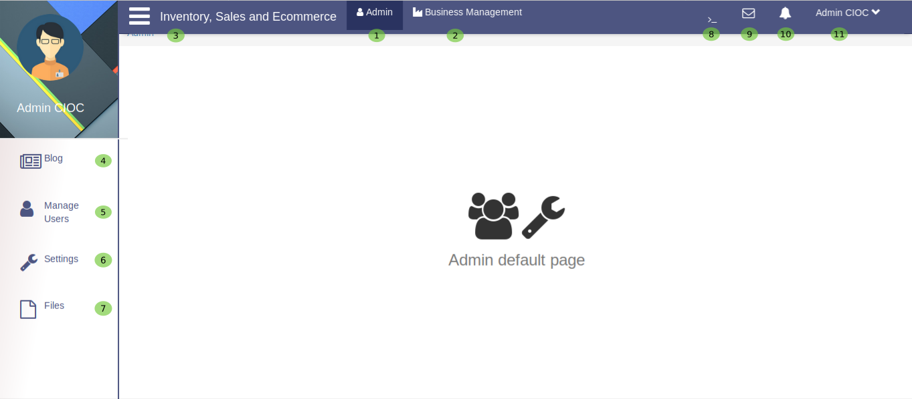

admin loged in¶
Let’s see what admin can do ?

Fig. 14 Admin Portal
Now you loged in as Admin so you can configure the several parts of this website, Let’s discuss one by one.
- this is your admin portal now its time to explore it.
- To manage your bussiness in easiest way let’s go through Business Management.
- You will get several Business Management options like Ecommerce, Point of sale and product inventory by
clicking on icon.
- This is Blog section of website, here admin can post some blogs and can manage it too.
- This will help admin to Manage Users we will see in details on seprate portal.
- Here admin can setting for most part of website. let’s see it on setting portal.
- Here admin can Save Files related to their bussiness. we explore it too on Save file portal.
Save Files¶

Fig. 15 Saving files
Here you can save the useful files
- Here browse the file from your computer.
- select it and Click 0n save button to save it.
- Here you can set the type of Files if it is static then turn the toggle button in static side if it is media file the turn the toggle button in media side.
- Here admin can right some queries
@aksto search their user like akshay sinha and can chat with searched user.- Here admin can read Messages and send too.
- Here admin will see all the notifications.
- Here admin will come to know about some more options for admin profile like Setting, About and Logout.